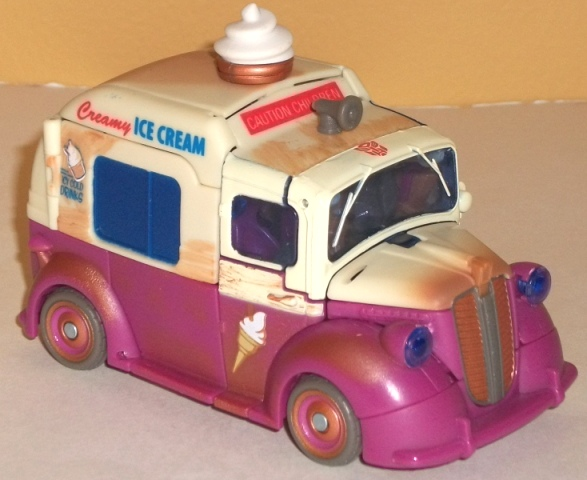
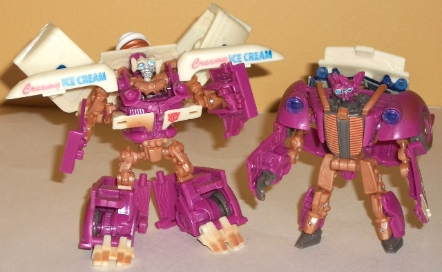
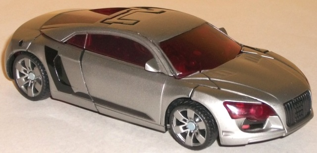
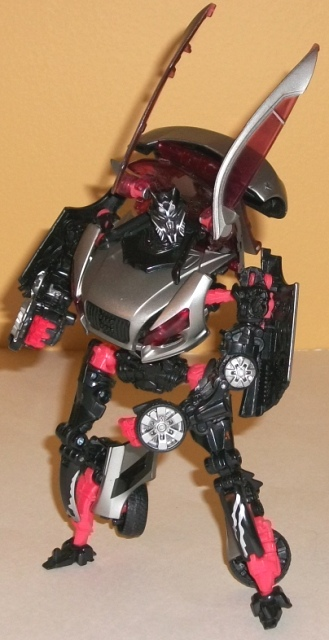

High
Speed Spy Battle [Target Exclusive]
High
Speed Spy Battle [Target Exclusive]
Set Price
: $20 U.S.
Overall Rating
: 7.5
(NOTE: Because this set is composed of repaints,
this is not a full-blown review. This mainly covers any changes made to
the set and the color scheme, and merely compares it to the original versions
of these molds. For a review on the original RotF Ice Cream Truck Autobot
Skids/Mudflap toy, go
here
. For a review on
the original RotF deluxe Sideways toy, go
here
.)
Autobot
Skids & Mudflap


Allegiances
: Autobot
Size
: Deluxe
Difficulty of Transformation
: Hard
Color Scheme:
Dull white, dull purplish
pink, dull milky orangish brown, and some silver, milky gray, metallic
rusty orange, moderately dark blue, light sky blue, and transparent light
blue
Individual Rating
: 7.8
This is the third release
of the fairly popular Ice Cream Truck Skids & Mudflap duo, and each
time they add a bit more to it. Compare it with the original release, and
you'll see this one has MUCH more of a "worn" look to it, in accordance
with how it appeared in the RotF movie. There's some nice dirty orangish-brown
wash all over parts of the vehicle mode to simulate dirt and rust, and
parts of the robot mode that were formerly white are now a bronzish orange.
The core colors of white and pink are in the same exact areas, but they're
both of a bit duller shade-- the pink especially, which looks more purple
on this release. I really like all the extra paint apps (and paint changes)
made to emphasize the worn-out look, but they also just have some more
paint apps period-- the "ice cold drinks" near the side windows, the painted
cone on the ice cream swirl on the top of the truck, the "CAUTION CHILDREN"
sign behind the speaker horn-- it just really helps the toy, particularly
in vehicle mode. In robot mode not quite so much, as the bronzish orange
bits don't fit quite as well with the pinkish purple as those limbs did
when they were white, but they still look decent enough, so it's not a
huge loss there, compared with all you gain in vehicle mode.
No mold changes have
been made to Autobot Skids & Mudflap.
Autobot Skids Tech Specs:
Strength: 4.0
Intelligence: 6.0
Speed: 7.0
Endurance: 4.0
Rank: 2.0
Courage: 8.0
Fireblast: 5.0
Skill: 3.0
Mudflap Tech Specs:
Strength: 4.0
Intelligence: 5.0
Speed: 7.0
Endurance: 5.0
Rank: 2.0
Courage: 9.0
Fireblast: 4.0
Skill: 3.0
Sideways


Allegiance:
Decepticon
Size
: Deluxe
Difficulty of Transformation
: Medium
Color Scheme
: Black, transparent
light red, metallic gunmetal gray, silver, and some bright red
Individual Rating
: 7.1
It seems like no matter
how many tries/re-releases he has, RotF Sideways just can't get a new color
scheme. The same basic color scheme and layout of metallic gunmetal gray,
black, and light red that was on the initial release is still here, but
some of the minor details have changed. The most obvious one is that the
red plastic used for parts of his robot mode is a even lighter and brighter
color than it was on the initial toy. In my opinion, that's a good thing,
as Sideways' overall scheme is pretty dark and those little bits of bright-colored
pieces really pop out at you. He also has a few new paint apps in robot
mode, like some "worn metal" silver paint apps on his knees, more silver
and red on his arms, and a few extra bits of silver and light red on his
chest. (His movie-inaccurate black paint apps in vehicle mode, sadly, remain.)
Last but not least, the transparent red used for his windows is a rather
nice-looking cherry color that, again, pops nicely against the gunmetal
gray and black. The red plastic has also been used for his headlights in
this release, which I think looks more "evil" and more appropriate than
the previous releases' clear headlights.
No mold changes have
been made to Sideways.
Sideways Tech Specs
:
Strength: 4.0
Intelligence: 7.0
Speed: 7.0
Endurance: 5.0
Rank: 3.0
Courage: 4.0
Fireblast: 3.0
Rank: 4.0
The "High Speed Spy Battle"
set is a bit difficult to either wholly recommend or NOT recommend. On
the one hand, the paint apps and color schemes on these guys are both the
best for their particular characters (though I think the
Dead
End
remold of Sideways looks better than this re-release). On the other
hand, the Sideways mold is just plain medicore, and the Ice Cream Twins'
mold is more likeable because of its originality than because of its actual
design and engineering. If you don't own either mold (or just Dead End),
and don't have a problem with vehicle mode panels sticking out in robot
mode, this may be worth a look at. Otherwise, don't bother.
High Speed Spy Battle Bio
:
After his catastrophic defeat at the
hands of Sideswipe, Sideways was rebuilt and sent deep undercover to infiltrate
the Autobots. He has been successful-- until now. The Autobot twins Autobot
Skids and Mudflap, back in their previous form for a little undercover
work of their own, have tracked him down. This time, they're determined
to prove themselves by trashing a Decepticon on their own.
Reviews by Beastbot
Back to
Transformers: Autobot Alliance Index